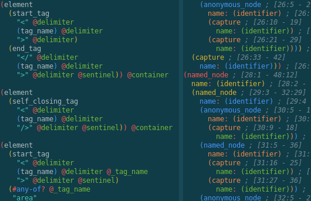
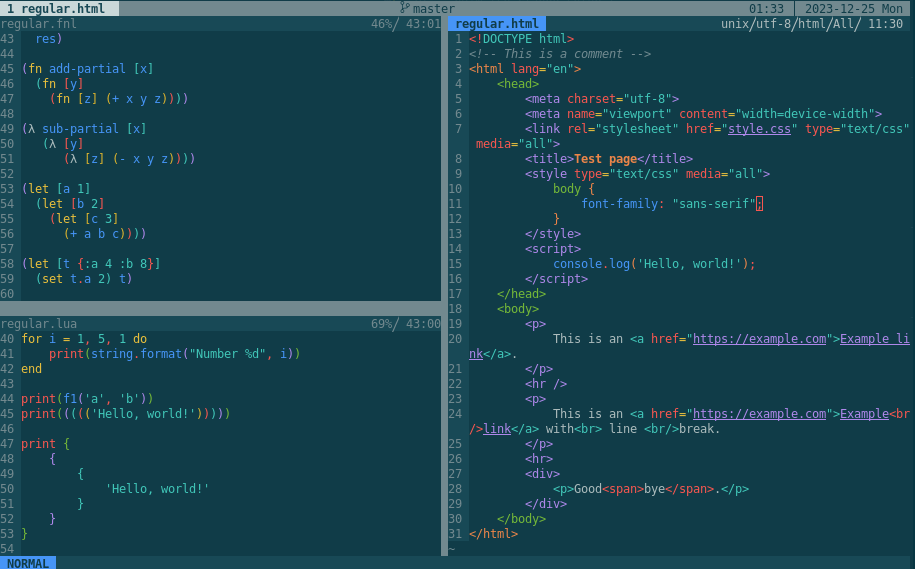

Rainbow-delimiters.nvim version 0.3.0 released
published:
categories: vim
I have just published version 0.3.0 of rainbow-delimiters.nvim (GitHub mirror). This update brings in a number of the usual improvements to to queries and strategies, but more importantly it also makes configuration at runtime more flexible, but most importantly in light of the current date it also includes a fun little Christmas-themed strategy.
General improvements
Support for Starlark (by Hoang Nguyen)
Missing patterns for Bash, C, Elixir, Fennel and React (by too many people to name them all here)
Updated Nim queries for current version of the parser (by aMOPel)
New query
rainbow-tags-reactfor React (by Riley Bruins)New query
rainbow-blocksfor Tree-sitter queries (by Binh Duc Tran and Daniel Kongsgaard)
The React queries are great for people who want to highlight only the tags in React
code, but not all the other parenthesis-like delimiters. The Tree-sitter query
query will highlight entire query nodes, not just the parentheses; this looks
especially great in the :InspectTree window in the upcoming Neovim 0.10.
Runtime configuration
Previously it was only possible to select a fixed query per language, but what
if my choice of query depends on runtime properties? For example, I like the
new rainbow-blocks query inside the :InspectTree window, but I find it too
vibrant when writing a query. Now we can set a function in the configuration,
which will be run for each new query buffer.
vim.g.rainbow_delimiters = {
query = {
query = function(bufnr)
-- Use blocks for read-only buffers like in `:InspectTree`
local is_nofile = vim.bo[bufnr].buftype == 'nofile'
return is_nofile and 'rainbow-blocks' or 'rainbow-delimiters'
end,
}
}
Here is what the result looks like. Note how both windows show content in the same language, but on the left-hand side only the parentheses are highlighted.

A festive Christmas strategy
What's better than a colourful syntax tree? A blinking festive Christmas Syntax Tree of course! Truly this will make rainbow-delimiters.nvim the ultimate rainbow plugin of all time.

Beautiful, is it not? Of course this is just a joke strategy and will not be loaded by default. If you want to try it out for yourself you will need to import the decorator yourself and apply it to your settings.
local rb = require 'rainbow-delimiters'
local christmas = require 'rainbow-delimiters.strategy.christmas'
-- This creates a new strategy which wraps around the existing global strategy
local christmas_lights = christmas.lights(rb.strategy['global']),
---@type rainbow_delimiters.config
vim.g.rainbow_delimiters = {
strategy = {
[''] = christmas_lights,
},
}
For maximum effect make sure you use this strategy when pair-programming or live-streaming. Merry Christmas to all of you.